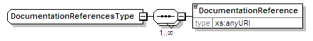
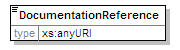

| diagram |  | ||
| namespace | urn:oasis:names:tc:evs:schema:eml:ts | ||
| children | DocumentationReference | ||
| used by |
|
||
| source | <xs:complexType name="DocumentationReferencesType"> <xs:sequence maxOccurs="unbounded"> <xs:element name="DocumentationReference" type="xs:anyURI"/> </xs:sequence> </xs:complexType> |
| diagram |  | ||||
| namespace | urn:oasis:names:tc:evs:schema:eml:ts | ||||
| type | xs:anyURI | ||||
| properties |
|
||||
| source | <xs:element name="DocumentationReference" type="xs:anyURI"/> |